setwd(here::here())
df=read.csv("plsfkinwork3.csv")
library(dplyr)
library(ggplot2)
library(purrr)
library(jsonlite)
library(tidyr)
options(scipen=999)
df=df[,-1]Archery Game Analysis
Lets load our libraries, you can disable package loading warnings with warning = FALSE argument, bellow chunk is code only
Firstly lets plot a histogram of Session duration of users,
There are two ways to calculate it, first one is to get start timestamp of a session and end timestamp of it, take the difference and that is your duration .
However since most users move their app to background while using their phones, scroll instagram, open snapchat and so on, Firebase datasets have another method to calculate user active duration.
Firebase counts how long they users keep the app on foreground, and send total duration in micro seconds inside the event_params in a key named “engagement_time_msec”. We can sum engagement_time_msec by session and that would be the average active session duration
df$engagement_time_msec=as.numeric(df$engagement_time_msec)
total_session_duration_per_user <- df %>%
group_by(user_pseudo_id) %>%
summarize(total_engagement_time = sum(engagement_time_msec,na.rm = TRUE))
total_session_duration_per_user$total_engagement_time=total_session_duration_per_user$total_engagement_time/60000
hist(total_session_duration_per_user$total_engagement_time,breaks=50)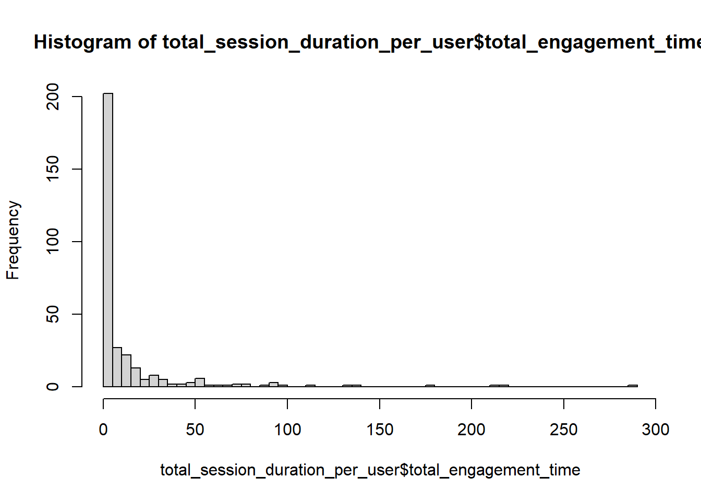
Our data manipulation have worked and we are now capable of printing some histograms, however submitting such an Instagram can get you fired, or cause you to receive lower grades for this reason we will make a histogram with beautiful aesthetics , and definitely better breaks
breaks <- c(0, 1, 2, 3, 5, 10, 20, 60, 1440)
total_session_duration_per_user$break_group <- cut(total_session_duration_per_user$total_engagement_time, breaks = breaks, labels = FALSE, include.lowest = TRUE)
custom_labels <- c("0-1", "1-2", "2-3", "3-5", "5-10", "10-20", "20-60", "60-1 day", "1 day+")
ggplot(total_session_duration_per_user, aes(x = factor(break_group))) +
geom_bar(fill = "blue", color = "black", alpha = 0.7) +
scale_x_discrete(breaks = seq_along(breaks) - 1, labels = custom_labels) +
labs(title = "Total Session Duration Histogram",
x = "Total Session Duration (minutes)",
y = "Frequency")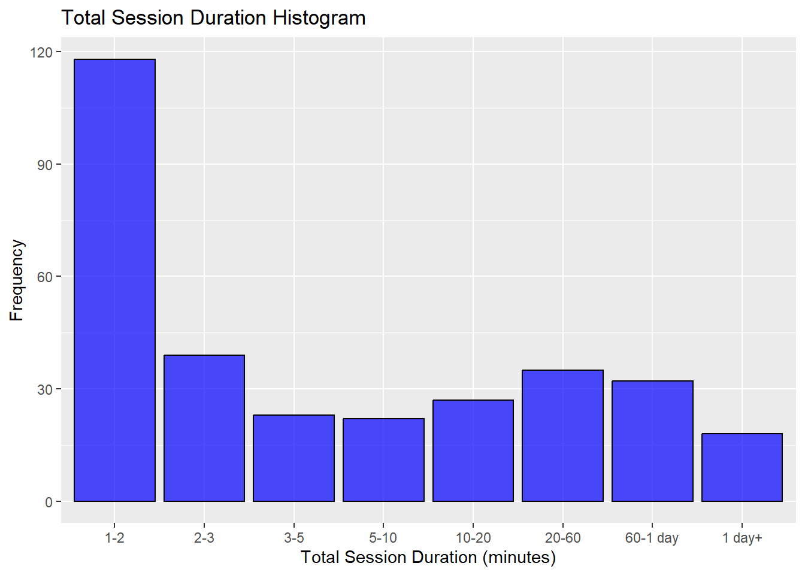
Total session duration per user is visualized with comprehensible breaks. Gamers mostly prefer playing and closing the game in short durations; however, we suspect that there are also excessively long sessions due to the time when the game is running in the background and not actively being played.
distinct_sessions_per_user <- df %>%
group_by(user_pseudo_id) %>%
summarize(distinct_session_count = n_distinct(ga_session_id))
ggplot(distinct_sessions_per_user, aes(x = distinct_session_count)) +
geom_histogram(fill = "blue", color = "black", alpha = 0.7, bins = 20) +
labs(title = "Distinct Sessions per User Histogram",
x = "Distinct Session Count",
y = "Frequency")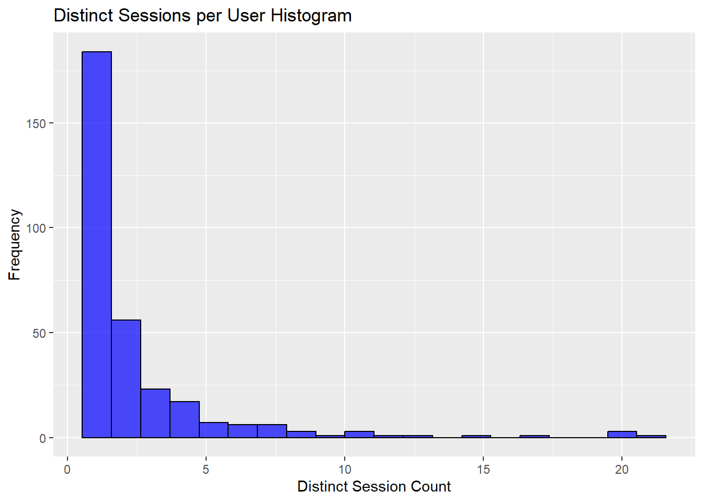
The repetition of playing the game by players within the range of our data is in line with the results of our previous analysis. Mostly, distinct players seem to have opened the game 1 or 2 times. There are also users who have opened more than 20 sessions, which may be considered as outliers.
df$user_first_touch_timestamp = as.numeric(df$user_first_touch_timestamp)
df$event_timestamp = as.numeric(df$event_timestamp)
user_ages <- df %>%
group_by(user_pseudo_id) %>%
summarise(time_difference = max(event_timestamp) - max(user_first_touch_timestamp))
user_ages$time_difference= user_ages$time_difference/60000. #BURAYLA D0LGD0LD0 ANALD0Z YAPALIM!
event_counts <- df %>%
count(event_name)
ggplot(event_counts, aes(x = reorder(event_name, -n), y = n)) +
geom_bar(stat = "identity", fill = "skyblue") +
labs(title = "Event Counts",
x = "Event Name",
y = "Count") +
theme_minimal() +
theme(axis.text.x = element_text(angle = 45, hjust = 1)) # Rotate x-axis labels for better readability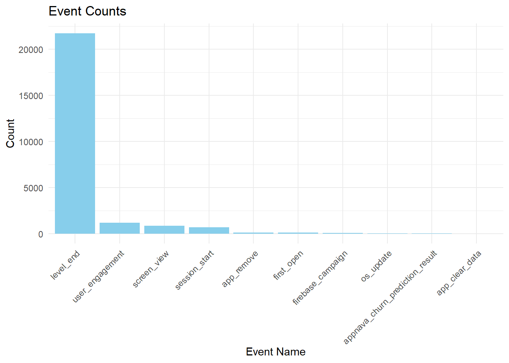
We explained how we parsed the events in the first part. To get a preliminary idea about the diversity and distribution density of events in our dataset, we prepared a bar plot. Despite the recording of event data in different types, level_end has the largest share. This result will contribute to strengthening our interpretations in future analyses.
df$mobile_brand_name= as.factor(df$mobile_brand_name)
df$continent= as.factor(df$continent)
distinct_users <- df %>%
select(user_pseudo_id, continent) %>%
distinct()
ggplot(distinct_users, aes(x = continent)) +
geom_bar(fill = "skyblue", color = "black") +
labs(title = "Distribution of Distinct Users Across Continents",
x = "Continent",
y = "Number of Distinct Users") +
theme_minimal()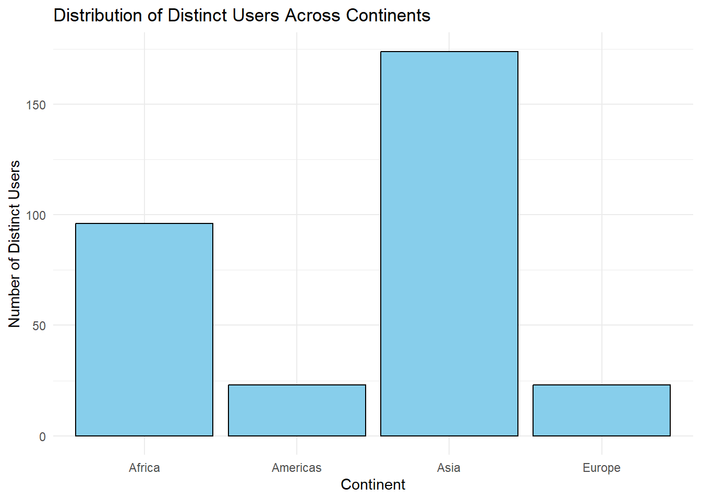
Our first research question was: “How does the distribution of players vary across continents and countries in the game, and are there noticeable patterns in user engagement based on continent?”
To answer this question, distinct users are selected at first. Then, a bar plot for the distribution of distinct users across continents is created. According to this part of the question, it is observed that users from Asia contribute the most to the intercontinental distribution with 175 users. The participation numbers in the continents of Europe and America are below 25.
users_per_country <- df %>%
group_by(continent, country) %>%
summarise(distinct_user_count = n_distinct(user_pseudo_id))
users_per_country_filtered <- users_per_country %>%
filter(distinct_user_count > 3)
users_per_country_filtered <- users_per_country_filtered %>%
arrange(desc(distinct_user_count)) %>%
mutate(country_display = ifelse(country == "T<U+00FC>rkiye", "Turkey", country))
ggplot(users_per_country_filtered, aes(x = reorder(country_display, distinct_user_count), y = distinct_user_count, size = distinct_user_count, color = continent)) +
geom_point() +
scale_size_continuous(name = "Distinct User Count", range = c(5, 17)) +
labs(title = "Bubble Chart of Distinct Users by Country",
x = "Country",
y = "Distinct User Count",
color = "Continent") +
theme_minimal() +
theme(axis.text.x = element_text(angle = 45, hjust = 1)) 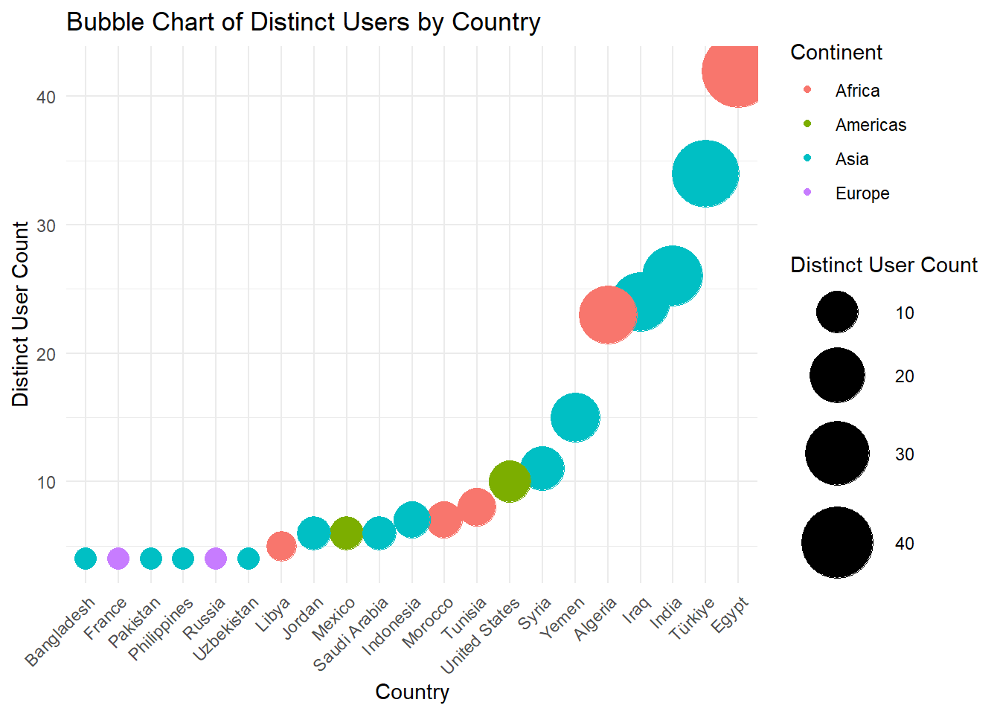
When we examine the question with a more general visualization, it is noticeable that the blue colored Asian countries - colors are indicating continental differences - are dominant both in terms of diversity and frequency. The size of the bubbles indicates the magnitude of the distinct user count. It can be commented that more than 30 distinct users from Egypt and Turkey have been actively engaged in the game.
max_level_data <- df %>%
group_by(user_pseudo_id, continent) %>%
summarize(max_level = max(level, na.rm = TRUE))
ggplot(max_level_data, aes(x = continent, y = max_level,fill = continent)) +
geom_boxplot() +
labs(title = "Box Plot of Maximum Level by Continent",
x = "Continent",
y = "Max Level"
) +
theme_minimal()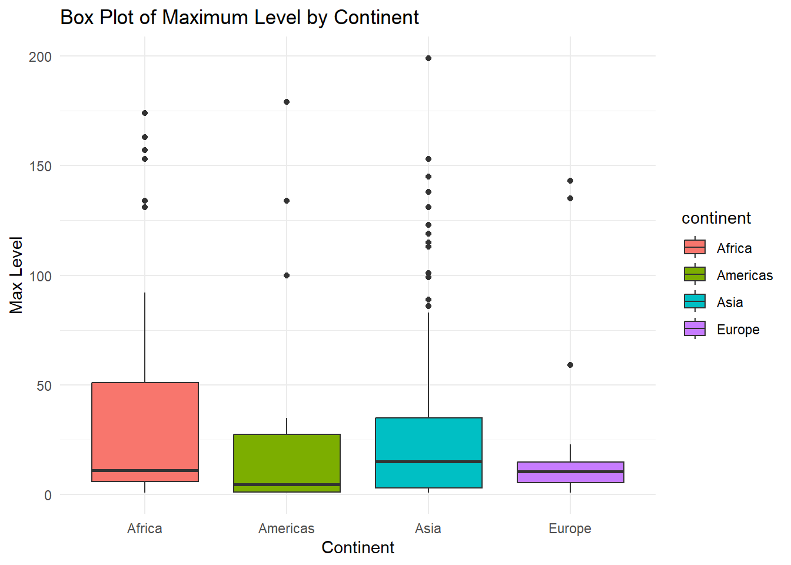
The second research question was: “What is the distribution of the maximum level attained by users in the game, analyzed in conjunction with their respective continents? Are there significant variations in the maximum level achieved, and do these patterns differ across continents?”
The maximum levels that each user played is selected at first. Then, to answer the question, boxplot of the continents is created. Although there seems to be a similar distribution overall, there are more user outliers in Africa and Asia. One of the reasons for this is the uneven distribution of users on the continents, as seen in our previous graphs. Nevertheless, the difference between the 1st and 3rd quartiles in the African continent is striking, and it is observed that Asia has the highest median value.
distinct_users_category <- df %>%
select(user_pseudo_id, category) %>%
distinct()
ggplot(distinct_users_category, aes(x = category)) +
geom_bar(fill = "skyblue", color = "black") +
labs(title = "Distribution of Distinct Users Across Categories",
x = "Category",
y = "Number of Distinct Users") +
theme_minimal()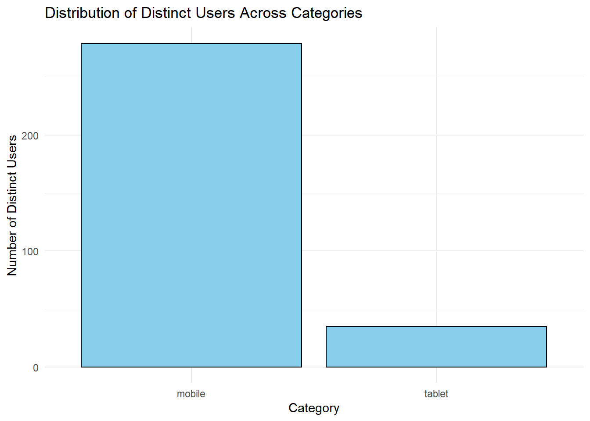
Research Question 3 covers “How does user engagement differ across mobile device categories in the game? Furthermore, are there variations in the maximum levels achieved by users within each category?”
This analysis seeks to uncover patterns and disparities in user behavior based on the distinction between mobile and phone categories. Distinct users and their associated category is selected and it is observed that users generally prefer playing from their mobile phones.
max_level_data_category <- df %>%
group_by(user_pseudo_id, category) %>%
summarize(max_level = max(level, na.rm = TRUE))
ggplot(max_level_data_category, aes(x = category, y = max_level,fill = category)) +
geom_boxplot() +
labs(title = "Box Plot of Maximum Level by Category",
x = "Category",
y = "Max Level",
fill = "Category") +
theme_minimal()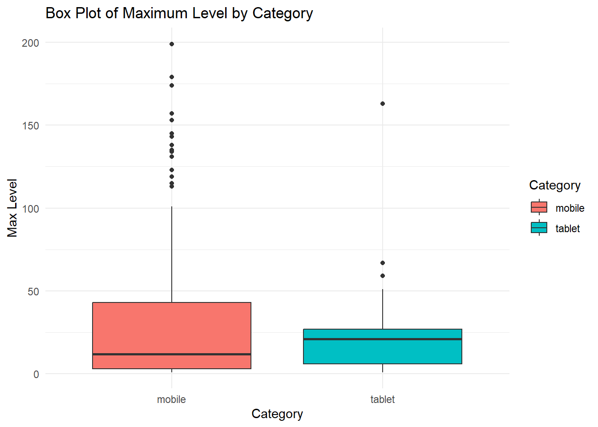
When comparing users’ achievements in reaching the maximum levels through box plots, no significant difference has been observed.
success_data <- df %>%
filter(event_name == "level_end" & success == 1)
leveltrialcountbyuser_wsuccess <- success_data %>%
group_by(user_pseudo_id, level) %>%
summarise(trials = n())
leveltrialcountbyuser_wsuccess <- leveltrialcountbyuser_wsuccess %>%
group_by(level) %>%
summarise(distinct_user_count = n(), trials = sum(trials))
ggplot(leveltrialcountbyuser_wsuccess, aes(x = level, y = distinct_user_count, fill = factor(level))) +
geom_bar(stat = "identity", position = "dodge") +
labs(title = "Frequency of Trials at Each Level",
x = "Level",
y = "Frequency",
fill = "Level") +
theme_minimal()+
theme(axis.text.x = element_text(angle = 45, hjust = 1),
legend.position = "none")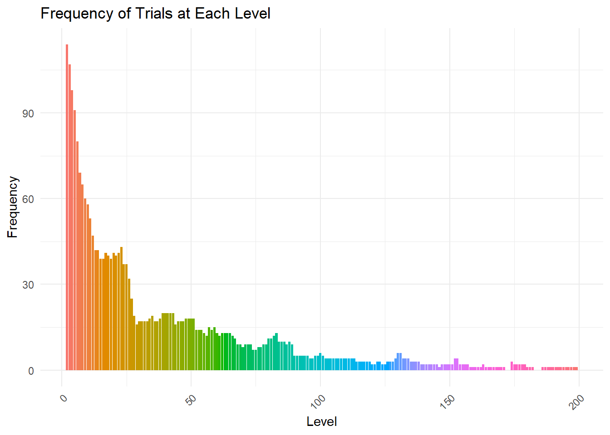
Final research question is “What is the distribution of successful trial frequencies at different levels within the game?” As a continuation of the research on levels, we can comment on whether players go back and replay the same level or which level they can pass more easily. It seems that the points where the drop in the graph is broken are around levels 17 and 26. After level 50, the total number of attempts decreases below 15.
leveltrialcountbyuser =df |> filter(event_name=="level_end") |>
group_by(level) |> count(level)
levelsuccesscountbyuser =df |> filter(event_name=="level_end" & success=="1") |>
group_by(level) |>count(level)
colnames(levelsuccesscountbyuser)[2]="success"
merged_data <- merge(leveltrialcountbyuser, levelsuccesscountbyuser, by = "level", all = TRUE)
merged_data$success <- ifelse(is.na(merged_data$success), 0, merged_data$success)
head(merged_data) level n success
1 1 5213 0
2 2 127 117
3 3 189 109
4 4 219 100
5 5 268 93
6 6 354 81merged_data[,"success_rate"]<- merged_data$success/merged_data$n
merged_data$level=merged_data$level-1
ggplot(merged_data[merged_data$level<10 &merged_data$level!=0 ,], aes(x = level, y = success_rate)) +
geom_bar(stat = "identity", fill = "skyblue", color = "black", width = 0.7) +
labs(x = "Level", y = "Success Rate", title = "Funnel Plot of Success Rate by Level") +
theme_minimal() +
scale_x_continuous(breaks = df$level)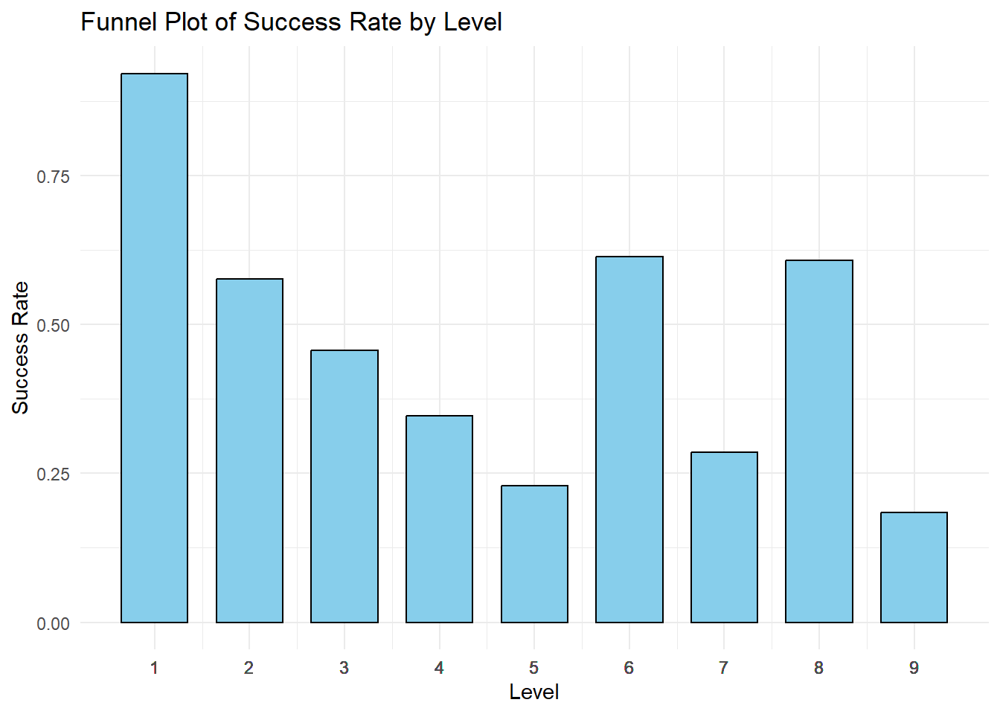
To understand the success rates of users between levels, we calculated the success rates of the levels. In our dataset, success column indicates 1 when users are successful in the level 1 and 0 when unsuccessful. We calculated the success rate by dividing the success rate to total number of attempts. As expected level 1 seems to be the easier level to pass.